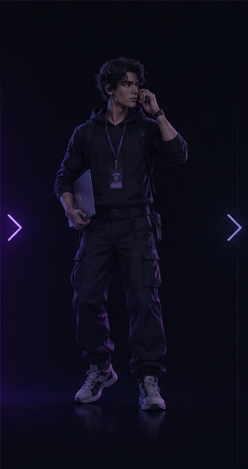
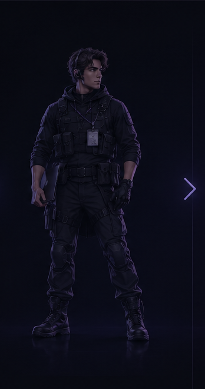

«Можете направить эту выплату?»
Найди нужную валютную очередь, проверь статус NEW, не дублируй обработку и ответь трейдеру.
Единый маршрут для первых дней в поддержке — доступы, инструменты, рабочие процессы, реальные кейсы и привычки, которые помогают уверенно работать в смене.


Отмечай практические пункты по мере обучения. Страница сохраняет твой прогресс на этом устройстве, а база знаний всегда доступна, когда появляется новый рабочий запрос.
Цель — предсказуемое рабочее место: меньше поиска вкладок, меньше проблем с доступами и меньше отвлечений во время активных запросов.
Найди нужную валютную очередь, проверь статус NEW, не дублируй обработку и ответь трейдеру.
Используй ID, чтобы найти запись, проверь её состояние, определи проблему и выполни разрешённое действие.
Проверь запрос, открой нужный раздел веб-платформы и восстанови доступ по утверждённой процедуре.
Используй стандартный ответ, не давай необоснованных обещаний и передай запрос дальше, если нужна дополнительная проверка.
Определи, что запрос относится к отделу корректировки, и передай контекст, не теряя исходный диалог.
Посчитай обработанный объём, сверь транзакции и убедись, что вывод можно безопасно подтвердить.
Поддержка принимает первый запрос. В рабочем чате передаются межотдельные задачи и контекст ответственным коллегам.
Обрабатывай запросы по понятному и повторяемому порядку. Быстро — хорошо, хаотично — дорого.
Пройди практические модули. Цель — уверенная работа, а не механическое заучивание.